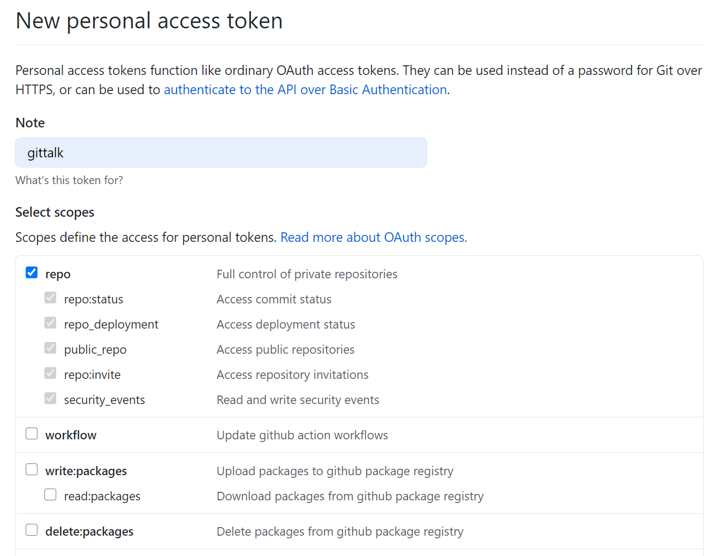
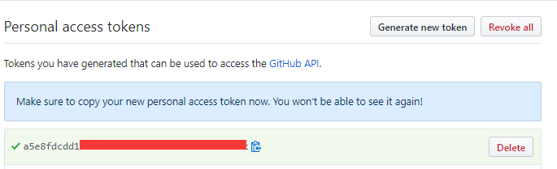

出现原因
该篇博文的评论系统还没初始化。
解决办法
手动完成
登录自己的github账号登录后，就可以在上面错误信息处看到“Initialize Comments”的按钮 (ps: 由于要求回调URL和当前地址一样，故第2步不能在本地调试， 需把代码先上传再调试),点击Initialize Comments按钮后，就可以开始对该篇博文开始评论了， 同时也可以在对应的github仓库看到相应的issue。
自动初始化Gitalk
生成sitemap站点地图：
hugo附带了一个内置模板文件,可在layouts/sitemap.xml或layouts/_default/sitemap.xml查看模板。
在public/sitemap.xml查看生成的sitemap站点地图。
获取github接口的调用权限
- 创建一个access token 点此创建 
- 点击Generate new token按钮,生成token。 
编写脚本文件
安装依赖包
在根目录下执行以下命令
npm install request --save
npm install xml-parser --save
npm install cheerio --save
创建脚本文件
在根目录下创建initialize.js
const request = require("request");
const fs = require("fs");
const path = require("path");
const url = require("url");
const xmlParser = require("xml-parser");
const cheerio = require("cheerio");
// 根据自己的情况进行配置
const config = {
username: "cytgenkidu", // GitHub 用户名
token: "", // GitHub Token
repo: "cytgenkidu.github.io", // 存放 issues的git仓库
// sitemap.xml的路径，commit.js放置在根目录下，无需修改，其他情况自行处理
sitemapUrl: path.resolve(__dirname, "./public/sitemap.xml"),
kind: "Gitalk", // "Gitalk" or "Gitment"
};
let issuesUrl = `https://api.github.com/repos/${config.username}/${config.repo}/issues?access_token=${config.token}`;
let requestGetOpt = {
url: `${issuesUrl}&page=1&per_page=1000`,
json: true,
headers: {
"User-Agent": "github-user"
}
};
let requestPostOpt = {
...requestGetOpt,
url: issuesUrl,
method: "POST",
form: ""
};
console.log("开始初始化评论...");
(async function () {
console.log("开始检索链接，请稍等...");
try {
let urls = sitemapXmlReader(config.sitemapUrl);
// let directory = ['/project/', '/tutorial/'];
let directory = ['/project/'];
//筛选需初始化的链接，如不需筛选，下面这句可注释
urls =inArray(urls, directory)
console.log(`共检索到${urls.length}个链接`);
console.log("开始获取已经初始化的issues:");
let issues = await send(requestGetOpt);
console.log(`已经存在${issues.length}个issues`);
let notInitIssueLinks = urls.filter((link) => {
return !issues.find((item) => {
link = removeProtocol(link);
return item.body.includes(link);
});
});
if (notInitIssueLinks.length > 0) {
console.log(`本次有${notInitIssueLinks.length}个链接需要初始化issue：`);
console.log(notInitIssueLinks);
console.log("开始提交初始化请求, 大约需要40秒...");
/**
* 部署好网站后，直接执行start，新增文章并不会生成评论
* 经测试，最少需要等待40秒，才可以正确生成， 怀疑跟github的api有关系，没有找到实锤
*/
setTimeout(async ()=>{
let initRet = await notInitIssueLinks.map(async (item) => {
let html = await send({ ...requestGetOpt, url: item });
let title = cheerio.load(html)("title").text();
let pathLabel = url.parse(item).path;
// let body = `${item}<br><br>${websiteConfig.description}`;
// let form = JSON.stringify({ body, labels: [config.kind, pathLabel], title });
let form = JSON.stringify({labels: [config.kind, pathLabel], title });
return send({ ...requestPostOpt, form });
});
console.log(`已完成${initRet.length}个！`);
console.log("可以愉快的发表评论了！");
},40000);
} else {
console.log("本次发布无新增页面，无需初始化issue!!");
}
} catch (e) {
console.log(`初始化issue出错，错误如下：`);
console.log(e);
} finally {
}
})();
function inArray(arr, arr2) {
var array3 = [];
for (var i = 0; i < arr.length; i++) {
for(var j=0;j<arr2.length;j++){
var item=arr2[j];
if (arr[i].indexOf(item) != -1) {
array3.push(arr[i]);
}
}
}
return array3;
}
function sitemapXmlReader(file) {
let data = fs.readFileSync(file, "utf8");
let sitemap = xmlParser(data);
return sitemap.root.children.map(function (url) {
let loc = url.children.filter(function (item) {
return item.name === "loc";
})[0];
return loc.content;
});
}
function removeProtocol(url) {
return url.substr(url.indexOf(":"));
}
function send(options) {
return new Promise(function (resolve, reject) {
request(options, function (error, response, body) {
if (!error) {
resolve(body);
} else {
reject(error);
}
});
});
}
执行脚本
node ./initialize.js